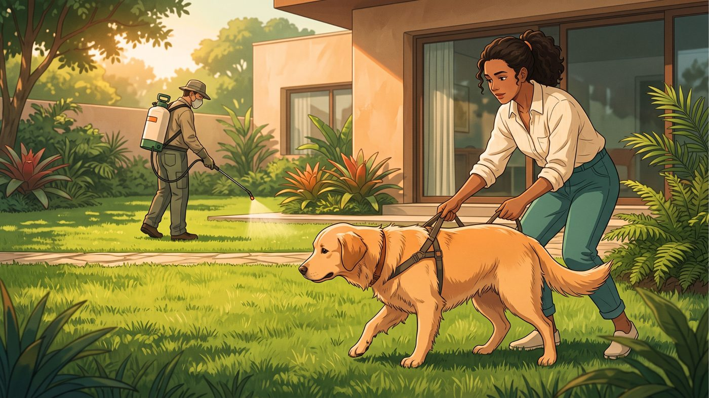

Você está passeando com seu cachorro quando, de repente, ele para, abaixa a cabeça e começa a comer grama como se tivesse encontrado o melhor petisco do mundo. Você tenta afastá-lo, mas ele insiste. E então surge a dúvida: "Será que ele está passando mal?"
A boa notícia é que, na maioria das vezes, comer grama ocasionalmente é um comportamento normal em cães e não significa, por si só, que exista alguma doença. O motivo exato, porém, não é totalmente conhecido. Curiosidade, gosto, comportamento instintivo, busca por fibras e até tédio podem estar envolvidos.
O que realmente importa é observar quanto seu cachorro come, com que frequência e se existem outros sinais junto desse comportamento.
Por que os cachorros comem grama?
Não existe uma única explicação que sirva para todos os cães. Um cachorro pode comer grama simplesmente porque gosta, enquanto outro pode fazer isso por hábito, curiosidade ou porque passa muito tempo no quintal sem estímulos.
Entre as possibilidades mais comuns estão:
Pode ser apenas um comportamento natural
Cães são animais exploradores e utilizam bastante a boca para conhecer o ambiente. Além disso, canídeos selvagens também consomem material vegetal ocasionalmente, o que sugere que comer plantas pode fazer parte de comportamentos alimentares naturais da espécie.
Por isso, se seu cachorro come alguns pedaços de grama durante o passeio, continua alegre, come normalmente e não apresenta nenhum outro sintoma, não há motivo para entrar em pânico.
Ele pode simplesmente gostar da grama
Sim, às vezes a explicação é bem mais simples.
Alguns cães parecem gostar do sabor, da textura ou até da sensação de mastigar a grama fresca. Isso pode ser especialmente evidente quando o animal procura determinadas áreas ou sempre escolhe folhas novas.
Nesse caso, comer pequenas quantidades ocasionalmente pode ser apenas uma preferência comportamental.
Pode estar relacionado à alimentação e às fibras
A grama contém fibras, embora não seja uma fonte adequada para substituir uma alimentação completa e equilibrada.
Alguns cães podem procurar material vegetal quando sua dieta não fornece a quantidade adequada de fibras. Isso não significa, entretanto, que todo cachorro que come grama tenha alguma deficiência nutricional. Cães alimentados com uma dieta completa também podem apresentar esse comportamento.
Se o hábito se tornou frequente ou exagerado, vale conversar com um veterinário para avaliar a alimentação e verificar se existe alguma questão digestiva ou nutricional.
É verdade que cachorro come grama para vomitar?
Essa é provavelmente a maior dúvida dos tutores — e existe um mito bastante difundido de que o cachorro procura grama quando está com dor de estômago para provocar o vômito.
Mas as evidências não sustentam essa explicação como regra.
Estudos citados por fontes veterinárias indicam que menos de 25% dos cães que comem grama vomitam depois, e apenas uma parcela pequena apresentava sinais de doença antes de comer a planta. Isso sugere que, na maioria dos casos, o cachorro não está comendo grama simplesmente para provocar vômito.
Isso não significa que um cachorro nunca coma grama quando está nauseado. Alguns podem apresentar esse comportamento associado a desconforto gastrointestinal. O ponto importante é não assumir automaticamente que "comeu grama = está tentando vomitar".
Se ele come grama e depois vomita repetidamente, apresenta diarreia, falta de apetite ou parece abatido, a situação merece outra atenção.
Quando comer grama pode ser um sinal de alerta?
O comportamento isolado geralmente não é motivo de preocupação. O cenário muda quando a ingestão de grama é excessiva, repentina ou acompanhada de outros sintomas.
Fique especialmente atento se seu cachorro:
- Começa a comer grandes quantidades de grama de maneira compulsiva
- Apresenta vômitos repetidos
- Tem diarreia
- Perde o apetite
- Fica apático ou muito mais quieto que o normal
- Demonstra dor ou desconforto abdominal
- Perde peso sem explicação
- Apresenta alterações persistentes nas fezes
- Passa a procurar grama de maneira muito diferente do habitual
Nessas situações, não tente resolver o problema simplesmente impedindo o cachorro de comer grama. O comportamento pode estar acompanhado de um problema gastrointestinal ou de outra condição que precisa ser investigada.
E se ele estiver vomitando?
Um episódio isolado de vômito em um cachorro que continua ativo e se comportando normalmente pode não representar uma emergência. Porém, vômitos frequentes ou acompanhados de outros sinais devem ser avaliados por um veterinário. Vômito com sangue, por exemplo, exige atendimento veterinário imediato.
O mais importante é olhar o conjunto de sinais, e não apenas o fato de ele ter comido grama.
Comer grama faz mal?
A grama em si não é necessariamente perigosa, mas o local onde ela cresce pode representar um risco.
Esse é um detalhe que muitos tutores esquecem.
Cuidado com produtos químicos

Nunca permita que seu cachorro coma grama que possa ter recebido recentemente herbicidas, pesticidas ou outros produtos químicos.
Dependendo da substância, a ingestão pode provocar sinais como salivação excessiva, náusea, vômito, diarreia e perda de apetite. Se você suspeitar que seu cachorro ingeriu grama contaminada por um produto químico, procure orientação veterinária rapidamente e, se possível, tenha em mãos a embalagem ou o nome do produto utilizado.
Cuidado com fezes de outros animais
Outra preocupação é a possibilidade de a grama estar contaminada por fezes.
Durante a mastigação, o cachorro pode acabar ingerindo parasitas, bactérias ou outros agentes presentes no ambiente. Áreas frequentadas por muitos animais, portanto, merecem atenção especial.
Por isso, manter a prevenção de parasitas e o acompanhamento veterinário em dia é uma parte importante dos cuidados gerais com o cão.
Meu cachorro come grama. Preciso impedir?
Nem sempre.
Se ele come pequenas quantidades ocasionalmente, está saudável, recebe uma alimentação adequada e você tem certeza de que a área não foi tratada com produtos químicos, o comportamento pode não precisar ser combatido.
Por outro lado, se ele passa muito tempo procurando e ingerindo grandes quantidades, vale tentar redirecionar o comportamento. Você pode:
- Aumentar os estímulos físicos e mentais, especialmente se ele passa muito tempo sozinho
- Oferecer brinquedos adequados para mastigação e enriquecimento ambiental
- Ensinar comandos como "deixa", utilizando reforço positivo
- Evitar áreas onde haja risco de pesticidas ou contaminação por fezes
- Conversar com o veterinário caso o comportamento tenha aumentado repentinamente ou esteja acompanhado de sintomas
Evite broncas ou punições. O objetivo é ensinar o cachorro a escolher uma alternativa segura, e não simplesmente criar medo durante o passeio.
Afinal, devo me preocupar?
Se você chegou até aqui procurando uma resposta rápida, ela é: sim, pode ser normal seu cachorro comer grama.
Comer pequenas quantidades ocasionalmente, sem apresentar outros sintomas, é um comportamento relativamente comum e geralmente não significa que ele esteja doente. O que merece atenção é a mudança de padrão.
Se seu cachorro sempre comeu um pouco de grama e continua saudável, provavelmente não há motivo para preocupação excessiva. Mas se ele passou repentinamente a comer grandes quantidades, está vomitando, apresenta diarreia, perdeu o apetite, parece abatido ou demonstra dor, não atribua tudo à grama: procure um médico-veterinário para descobrir o que está acontecendo.
E lembre-se de uma regra simples: mais importante do que perguntar "por que ele come grama?" é observar "como ele está se comportando além disso?". É essa combinação de comportamento e sinais físicos que ajuda a diferenciar um hábito comum de uma situação que merece investigação.
Importante: este conteúdo tem finalidade educativa e não substitui uma avaliação individual feita por um médico-veterinário. Em caso de sintomas persistentes, suspeita de intoxicação ou alteração importante no comportamento do animal, procure atendimento profissional.